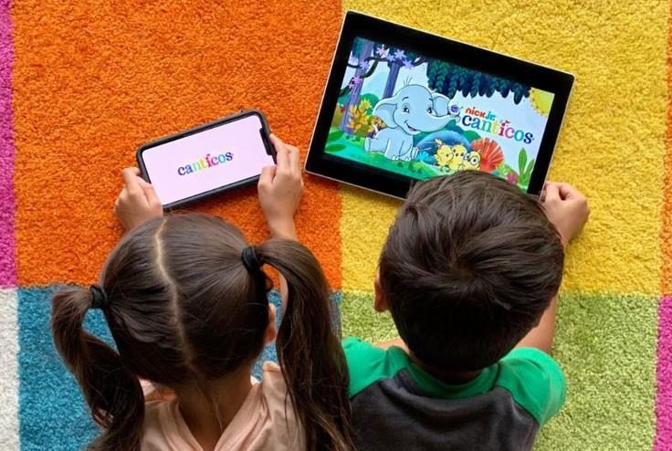

Anak Terlalu Lama Bermain Gadget, Apa Dampaknya bagi Kesehatan?

Ponsel dan tablet kini menjadi bagian dari kehidupan sehari-hari, termasuk bagi anak-anak. Perangkat digital bisa membantu anak belajar, berkomunikasi, dan mengenal hal baru. Namun, ketika waktu di depan layar semakin panjang hingga mengurangi waktu bermain aktif, tidur, atau berinteraksi dengan keluarga, orang tua perlu mulai memperhatikan kebiasaan tersebut. Lantas, seberapa besar pengaruh penggunaan gadget terhadap kesehatan anak, dan bagaimana orang tua dapat membatasi waktu layar tanpa harus melarang teknologi sepenuhnya?
Mengapa Anak Mudah Terpikat pada Gadget?
Video pendek, permainan digital, dan tontonan yang berganti secara otomatis dapat membuat anak ingin terus melihat layar. Bagi orang tua yang memiliki banyak pekerjaan, gadget juga terkadang menjadi cara praktis untuk menenangkan anak sementara waktu. Kebiasaan ini dapat dimengerti, tetapi jika menjadi satu-satunya cara menghibur anak, kesempatan untuk melakukan aktivitas lain bisa semakin berkurang.
Penggunaan gadget tidak selalu berdampak buruk. Konten yang sesuai usia, digunakan dalam durasi wajar, dan didampingi orang tua dapat mendukung proses belajar. Hal yang perlu diperhatikan adalah jenis konten, usia anak, lama penggunaan, serta apakah layar mulai menggantikan tidur, aktivitas fisik, permainan kreatif, dan interaksi langsung.
Apa Dampak Penggunaan Gadget Berlebihan bagi Anak?
American Academy of Pediatrics (AAP) menjelaskan bahwa penggunaan media digital pada anak dan remaja memiliki manfaat sekaligus risiko. Penggunaan yang tidak seimbang dapat berkaitan dengan gangguan tidur, masalah berat badan, paparan konten yang tidak sesuai usia, serta risiko terhadap privasi dan keamanan. Dampaknya tidak sama pada setiap anak karena dipengaruhi oleh usia, jenis media, isi konten, dan kebiasaan keluarga.
Pada anak usia dini, waktu yang terlalu banyak di depan layar juga berpotensi mengambil waktu yang seharusnya digunakan untuk bergerak, berbicara, membaca bersama, atau bermain dengan orang lain. Aktivitas tersebut penting bagi perkembangan bahasa, kemampuan sosial, dan keterampilan motorik. Karena itu, perhatian orang tua sebaiknya tidak hanya tertuju pada berapa lama anak memegang gadget, tetapi juga pada kegiatan penting yang mungkin tergantikan.
Berapa Lama Waktu Layar yang Dianjurkan?
World Health Organization (WHO) memberikan panduan khusus bagi anak di bawah usia lima tahun. Untuk bayi di bawah satu tahun, waktu layar pasif tidak dianjurkan. Pada anak usia satu tahun, waktu layar pasif juga tidak dianjurkan, sedangkan anak usia dua tahun serta usia tiga sampai empat tahun sebaiknya tidak menghabiskan lebih dari satu jam sehari untuk aktivitas layar pasif; durasi yang lebih singkat lebih baik.
Panduan untuk anak yang lebih besar perlu mempertimbangkan tahap perkembangan, kebutuhan belajar, tidur, aktivitas fisik, dan kehidupan sosialnya. AAP menekankan bahwa tidak ada satu aturan yang cocok untuk semua anak usia sekolah dan remaja. Orang tua dapat membuat kesepakatan penggunaan media yang sesuai dengan usia dan kondisi anak, sambil memastikan gadget tidak menggeser kebutuhan dasar seperti tidur cukup, bergerak, dan berinteraksi langsung.
Tanda Penggunaan Gadget Perlu Diperhatikan
Orang tua dapat mulai mengevaluasi kebiasaan anak jika waktu layar terus bertambah, anak sulit berhenti saat diminta, atau penggunaan gadget sering memicu konflik di rumah. Hal lain yang perlu diperhatikan adalah ketika anak mulai mengabaikan waktu tidur, enggan melakukan aktivitas yang sebelumnya disukai, jarang bergerak, atau menggunakan layar saat makan dan berkumpul bersama keluarga.
Tanda-tanda tersebut bukan berarti anak otomatis mengalami gangguan tertentu. Namun, hal itu dapat menjadi kesempatan bagi keluarga untuk meninjau kembali rutinitas harian, isi tontonan, dan aturan penggunaan perangkat. Jika penggunaan media terasa sulit dikendalikan atau sudah mengganggu fungsi sehari-hari, orang tua dapat meminta saran dokter anak atau tenaga profesional yang sesuai.
Cara Orang Tua Membatasi Gadget Tanpa Terus Melarang
Langkah pertama adalah membuat aturan yang jelas dan konsisten bersama anak. Misalnya, tidak menggunakan gadget saat makan, menyimpan perangkat menjelang waktu tidur, serta menentukan waktu khusus untuk menonton atau bermain. Aturan akan lebih mudah dijalankan jika dijelaskan dengan bahasa yang sesuai usia anak dan diterapkan secara konsisten, bukan hanya ketika orang tua sedang kesal.
Orang tua juga dapat menawarkan kegiatan pengganti, seperti bermain di luar, menggambar, membaca buku, membantu pekerjaan sederhana di rumah, atau bermain bersama keluarga. Pilih konten yang sesuai usia dan, jika memungkinkan, temani anak ketika menonton agar orang tua dapat menjelaskan apa yang dilihatnya. Menonaktifkan putar otomatis dan notifikasi yang tidak diperlukan juga bisa membantu mengurangi penggunaan yang berkepanjangan.
Kebiasaan Digital Sehat Dimulai dari Keluarga
Anak belajar bukan hanya dari aturan yang diberikan, tetapi juga dari contoh yang dilihat setiap hari. Ketika orang tua terus menggunakan ponsel saat berbicara dengan anak, anak dapat menangkap bahwa layar selalu lebih penting daripada interaksi langsung. Karena itu, membangun kebiasaan digital sehat perlu melibatkan seluruh anggota keluarga, termasuk orang dewasa.
Membatasi gadget bukan berarti menolak perkembangan teknologi. Tujuannya adalah memastikan teknologi digunakan secara seimbang dan sesuai kebutuhan, tanpa mengurangi waktu tidur, bermain aktif, belajar, serta membangun hubungan dengan orang lain. Dengan pendampingan yang hangat, aturan yang realistis, dan pilihan aktivitas yang menarik, anak dapat belajar menggunakan perangkat digital secara lebih bertanggung jawab seiring bertambahnya usia.
Oleh: Fathiya Hanin Zahrani Qolbi
Daftar Pustaka
American Academy of Pediatrics. (2025). Helping kids thrive in a digital world: AAP policy explained. HealthyChildren.org. healthychildren.org
American Academy of Pediatrics. (2026, January 20). How to make a family media plan. HealthyChildren.org. healthychildren.org
World Health Organization. (2019). Guidelines on physical activity, sedentary behaviour and sleep for children under 5 years of age. who.int